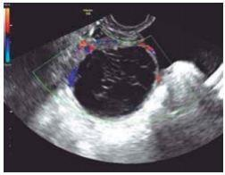

Uma paciente nuligesta de 28 anos de idade deu entrada no pronto-socorro com queixa de dor em fossa ilíaca esquerda há um dia. Refere ciclos menstruais regulares, com duração de três dias e intervalos de 28 dias, e nega dismenorreia. DUM há quinze dias. Ao exame físico, paciente em bom estado geral, corada, hidratada, afebril, com frequência cardíaca de 86 bpm, pressão arterial de 110 x 70 mmHg, abdome plano, ácido, doloroso à palpação profunda de fossa ilíaca esquerda e DB negativo. Ao toque, útero intrapélvico, móvel, indolor à mobilização, e anexo esquerdo pouco aumentado e discretamente doloroso à manipulação. Hb: 12; leucócitos: 6.700 e PCR: 1. Realizou USG TV, que revelou: cisto hemorrágico de 3 cm em ovário direito. Com base nesse caso hipotético, assinale a alternativa que apresenta a conduta mais adequada.
C.M.L., 20 anos, atendida no PS pela segunda vez no intervalo de 1 semana, devido a quadro de dor pélvica intensa, com piora progressiva e refratária a analgésicos e anti- inflamatórios. Data da última menstruação: há 20 dias. Contracepção: condon. Ao exame físico: bom estado geral, corada, apirética, normotensa, abdome doloroso, dor à descompressão brusca (DB) duvidosa. Ao especular e toque, colo epitelizado, sem secreções, consistência bro-elástica, útero de volume normal e abaulamento em região de fórnice lateral esquerdo, muito doloroso ao toque. Ao exame de ultrassonogra a, tumoração cística medindo 10 cm no maior diâmetro, aspecto simples e sem debris, em região anexial esquerda de possível origem ovariana. Qual a hipótese diagnóstica mais provável e a conduta?
Mulher de 25 anos, usuária de anticoncepcional oral regularmente, deu entrada no pronto-socorro com queixa de dor em fossa ilíaca direita há 3 dias, progressiva, de forte intensidade no momento. No exame físico, apresenta-se afebril, com dor à descompressão brusca abdominal (Blumberg +). O diagnóstico menos provável nesse caso é:
Paciente de 35 anos de idade, sexo feminino, procurou auxilio médico na Emergência com queixa de dor abdominal súbita na fossa ilíaca direita acompanhada de sudorese, taquicardia e hipotensão. Na anamnese relatava ter sido submetida a laqueadura tubária. Qual o diagnóstico mais provável para esta paciente?
Sabemos que a torção anexial é uma causa importante de cirurgias de urgência em mulheres. Sobre a torção anexial podemos afirmar:
Em relação à torção anexial, atribua V (verdadeiro) ou F (falso) às afirmativas a seguir. ( ) O ovário esquerdo está mais propenso a torcer em relação ao direito. ( ) Ocorre mais comumente com cistos benignos em relação aos malignos. ( ) A maioria dos casos de torção ovariana ocorre em mulheres no climatério. ( ) A gravidez está associada a um risco aumentado de torção ovariana. ( ) A ausência de uma massa anexial exclui o diagnóstico de torção. Assinale a alternativa que contém, de cima para baixo, a sequência correta.
Mulher, 30 anos, G2P2, dá entrada no pronto-socorro com dor pélvica aguda, localizada em fossa ilíaca direita. Apresentou descompressão brusca positiva e toque vaginal doloroso em fundo de saco posterior. O clínico de plantão aventou algumas hipóteses, dentre as quais torção de anexo direito, apendicite aguda e prenhez ectópica direita. O ginecologista foi chamado para avaliar a paciente. Qual(is) exame(s) ele deve solicitar para elucidar o diagnóstico?
Diante de avaliação clínica de paciente com dor pélvica aguda, com beta HCG negativo, pode-se afirmar:
Paciente de 45 anos com sangramento uterino anormal e visualização de pólipos endometriais na USG transvaginal. É submetida a histeroscopia ambulatorial sem energia. Ao realizar o exame, com di culdade por conta de estenose de orifício interno, o histeroscopista observa que perfurou o útero. A conduta mais adequada, neste momento, para esta paciente é:
Mulher de 32 anos procura atendimento de emergência com dor súbita de forte intensidade em fossa ilíaca direita. Nega atraso menstrual, sem vida sexual ativa. Ultrassonogra a transvaginal evidenciando ovário direito edemaciado, aumentado de volume e com interrupção do fluxo sanguíneo ao doppler. Sobre o diagnóstico mais provável, marque a opção CORRETA.
A. P.M anos apresenta dor aguda em baixo ventre, em pontada, de moderada/forte intensidade associada à distensão abdominal, sem melhora com analgesia. AP: G0P0, 17° dia do ciclo menstrual. EF: dor de forte intensidade à palpação do baixo ventre, predominantemente em FID, DB(–), toque vaginal: massa de consistência cística, com +5 cm de diâmetro em FID, intensa dor à mobilização do colo e à palpação de fundo de saco lateral direito. Ultrassonogra a com Doppler apresentada a seguir: A conduta é:

Foi admitida pelo médico que está na “porta” do Pronto Socorro uma paciente de 21 anos, com dor pélvica súbita, seguida de lipotimia e dor irradiada para ombro direito. Ao exame físico a paciente apresenta-se pálida, afebril, com posição antálgica dobrando o tronco sobre os joelhos. Ao exame clínico, deitada, a PA é de 100/60mmHg, mas cai para 80/40mmHg quando a paciente ca em pé. Nesse momento a paciente refere “tontura” e sensação de desmaio. O abdome está dolorido difusamente, com descompressão brusca positiva, e não se percebe visceromegalia justamente pela defesa muscular do abdome. Ela é nuligesta, tem ciclos menstruais espontâneos, não usa contracepção e refere dispareunia nos últimos dias. Ao exame ginecológico há pequeno sangramento na vagina, colo sem lesões e dor na tração lateral do colo uterino. Você é o médico ginecologista da retaguarda. Qual deve ser seu próximo passo?
Revisar: possível letra faltando em enunciado
A respeito de torção de massas anexiais, assinale a incorreta:
Uma paciente está sendo atendida no ambulatório de ginecologia de um hospital escola de referência estadual. Refere dor pélvica aguda de forte intensidade que já dura 06 h, que não cedeu com analgésicos, acompanhada de náuseas, vômitos, palidez cutânea, sinais de irritação peritoneal e defesa muscular no abdome inferior. PA 90X40 mmHg. Traz consigo ultrassonogra a, realizada há 15 dias, com laudo de cisto ovariano de conteúdo líquido, homogêneo, medindo 6cm, ausência de ascite. Tem 16 anos, sem filhos. A conduta mais adequada do ginecologista, para o caso exposto será:
Paciente de 24 anos deu entrada no Pronto Socorro com história de dor repentina, contínua e inespecí ca iniciada há 8 horas de forte intensidade em região inguinal direita, com irradiação para fossa ilíaca e anco direitos, sem sangramento ou febre. Ao exame, observa-se dor à palpação de FID com descompressão dolorosa. Toque vaginal di cultado pela dor, mas mostra aumento de volume ovariano à direita. Exame de imagem (ultrassonogra a transvaginal) apresenta ovário de aparência sólida, aumentado de volume, com estruturas císticas na periferia e edema no estroma. O Doppler evidencia diminuição do fluxo venoso. Hemograma sem alterações e Beta HCG negativo. Qual é o diagnóstico mais provável?
Revisar: possível letra faltando em enunciado
Fazem parte do diagnóstico diferencial da dor pélvica aguda, EXCETO:
Na avaliação da paciente ginecológica, o termo Mittelschmerz significa:
Mulher de 25 anos de idade chega à emergência, referindo dor em fossa ilíaca direita e em hipogástrio, de início súbito há cerca de duas horas. Apresentou lipotímia com rápida recuperação. Nega náuseas, vômitos ou febre. Vida sexual ativa. Última menstruação há mais ou menos 15 dias. Ao exame: corada, hidratada, eupneica e afebril. PA: 120/80 mmHg e FC: 90 bpm. O abdome está plano, com peristalse normal, ácido e pouco doloroso à palpação profunda no hipogástrio e em fossa ilíaca direita, com descompressão súbita levemente dolorosa, nessa região. Exames complementares: hemograma normal, ultrassonogra a transvaginal evidencia líquido livre em fundo de saco de Douglas em pequena quantidade. Este caso tem como diagnóstico provável:
Em relação às urgências ginecológicas, marque a resposta INCORRETA.
Marcela, 24 anos, procura o pronto-socorro com queixa de dor em baixo ventre de característica súbita e crescente. Teve sua última menstruação há 20 dias. Não tem história de febre ou corrimento. Nega atividade sexual nos últimos três meses. Realizou ultrassonogra a transvaginal que revelou massa anexial de 13 cm de diâmetro apresentando aspecto em “olho-de- boi”/em alvo, cística, de paredes finas, com baixa perfusão ao estudo Doppler. O provável diagnóstico é:
Paciente de 32 anos de idade submeteu-se à histeroscopia para polipectomia. Durante o procedimento, houve perfuração da parede do útero de 0,5 cm antes da retirada do pólipo. Nesse momento, deve-se:
Ao realizar a laparoscopia para uma suspeita de torção ovariana, em jovem nulípara de 18 anos, o cirurgião vê que o pedículo ovariano vascular torceu-se mais uma vez e meia e que o ovário parece um tanto azulado. Qual dos seguintes é melhor manejo nesse ponto?
Mulher de 29 anos, G2P2A0C0, com queixa de dor moderada em baixo ventre há três dias, com piora súbita há cinco horas. Exame físico: bom estado geral, afebril, descompressão brusca presente, mais acentuada em anco esquerdo. PA 120 x 80 mmHg. Exames laboratoriais: hemograma e urina tipo I normais e teste de gravidez negativo. Ultrassom transvaginal: imagem anecoica de 10 cm de diâmetro ocupando todo parênquima ovariano, com septação interna, sem fluxo ao doppler. O diagnóstico e conduta são, respectivamente:
M. G., 24 anos, nuligesta, está no oitavo dia do ciclo menstrual e a última menstruação encerrou-se há quatro dias. Foi atendida em um serviço de emergência com quadro de dor pélvica iniciada há 12 dias, com piora significativa há sete horas, principalmente em fossa ilíaca direita, associada à taquicardia, fraqueza e inapetência. Nega alterações urinárias ou intestinais. No exame físico apresentou temperatura axilar de 38,6°C, PA: 100/60 mmHg e pulso de 102 bpm, dor importante à palpação de andar inferior do abdome, com descompressão brusca positiva de fossa ilíaca direita. Ao toque vaginal bimanual sentiu-se aumento de calor local e massa anexial de quatro centímetros em fossa ilíaca direita. O diagnóstico mais provável é: Respostas: 1 12 23